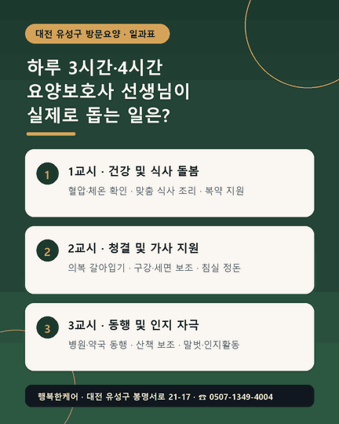

1. 대전 방문요양, 어떤 어르신이 이용하실 수 있나요?
노인장기요양보험 방문요양은 만 65세 이상 어르신 또는 만 65세 미만이라도 치매·뇌혈관질환·파킨슨병 등 노인성 질병으로 6개월 이상 혼자서 일상생활을 수행하기 어려우신 분이 국민건강보험공단으로부터 장기요양 1~5등급 판정을 받으시면 이용하실 수 있습니다.
요양원 입소와 달리 어르신께서 평생 살아오신 익숙한 자택(대전 유성구·서구·중구·대덕구·동구 전 지역)에서 생활하시면서 원하는 요일과 시간대에 국가자격 요양보호사 선생님의 1:1 방문 돌봄을 받으실 수 있어 어르신의 심리적 안정감이 매우 높습니다.
아직 장기요양등급이 없으신 경우에도 센터 전담 사회복지사가 어르신 댁이나 병원으로 직접 찾아뵙고 무료로 등급 신청 절차를 안내해 드립니다.

2. 2026년 대전 방문요양 비용과 시간별 본인부담금(15%)
방문요양 비용은 전국 모든 지정 기관이 국민건강보험공단 고시 수가를 동일하게 적용받으며, 국비로 85%~100%가 지원됩니다.
2026년 기준 일반 수급자(본인부담 15%) 어르신이 하루 3시간(180분) 이용하실 때 본인부담금은 회당 약 8,370원이며, 하루 4시간(240분) 이용 시 회당 약 10,557원입니다.
건강보험료 기준 등에 따른 감경 대상자 어르신은 법정 본인부담률이 9% 또는 6%로 경감되며, 기초생활수급권자 어르신은 법정 본인부담금 0%(전액 국비 지원)로 이용하실 수 있습니다.
3. 하루 3시간·4시간 동안 요양보호사 선생님이 도와주시는 일
대전 방문요양 서비스는 크게 신체활동 지원, 가사 및 일상생활 지원, 정서 지원, 외출·병원 동행의 네 가지 영역으로 이루어집니다.
어르신 식사 차려드리기와 복약 확인, 세면·양치·의복 갈아입기, 화장실 이동 및 실내외 산책 부축은 물론 어르신 방 청소와 세탁, 말벗 및 인지자극 활동까지 어르신 컨디션에 맞추어 세심하게 진행됩니다.
정기적인 병원 진료나 약국 처방약 수령이 필요하실 때도 선생님이 어르신을 모시고 안전하게 동행해 드리므로 맞벌이 자녀분들의 부담을 크게 덜어드립니다.
4. 등급별 월 한도액 안에서 방문목욕·복지용구와 함께 쓰는 법
장기요양 1~5등급마다 매월 국가에서 지원하는 재가급여 월 한도액이 정해져 있습니다.
이 월 한도액 안에서는 일반 방문요양뿐만 아니라 요양보호사 2인 1조가 댁으로 찾아가는 가정 방문목욕을 주 1회 함께 이용하실 수 있어 거동이 힘든 어르신의 위생 관리에 큰 도움이 됩니다.
또한 전동침대, 성인용보행기, 미끄럼방지매트, 안전손잡이 등 복지용구는 재가급여 월 한도액과 별도로 연 160만 원 한도 내에서 대여·구입하실 수 있습니다.
5. 치매 5등급 어르신을 위한 인지활동형 방문요양 안내
장기요양 5등급(치매특별등급) 어르신의 경우 일반 가사 지원 대신 치매 전문 교육을 이수한 요양보호사 선생님이 두뇌 자극과 잔존 기능 유지를 돕는 인지활동형 방문요양을 이용하시게 됩니다.
회상 요법, 워크북 풀기, 손가락 체조, 일상생활 함께하기 등을 통해 치매 증상 악화를 늦추고 낮 시간 동안 규칙적인 생활 리듬을 유지하도록 돕습니다.
6. 대전 방문요양센터 선택 시 꼭 확인해야 할 3가지 기준
법정 본인부담금은 어느 센터나 동일하기 때문에, 센터를 고르실 때는 첫째 사회복지사가 초기 방문상담부터 정기 라운딩까지 꼼꼼하게 소통하는지, 둘째 어르신 성향에 맞는 베테랑 요양보호사 인력풀이 탄탄한지, 셋째 선생님과의 조율이나 교체 요청 시 돌봄 공백 없이 빠르게 대처해 주는지 확인하셔야 합니다.
행복한케어는 유성구 봉명동을 거점으로 유성구·서구·중구·대덕구·동구 전 지역 어르신께 맞춤형 1:1 전담 케어를 제공하고 있습니다.
7. 신청부터 돌봄 시작까지 4단계 진행 절차
① 전화(0507-1349-4004) 또는 온라인 무료 상담 접수 → ② 전담 사회복지사 어르신 댁(또는 병원) 방문상담 및 등급/이용계획 확인 → ③ 어르신 성향·시간대에 맞춘 최적의 요양보호사 선생님 매칭 → ④ 표준장기요양이용계약 체결 및 안심 방문돌봄 시작 순서로 진행됩니다.
이미 등급이 있으신 어르신은 상담 후 빠르면 2~3일 내로 돌봄을 시작하실 수 있습니다.
8. 대전 방문요양 무료 가정방문 상담 및 계산기 안내
우리 부모님 등급에서 한 달 예상 본인부담금이 얼마인지 궁금하시다면 행복한케어 공식 홈페이지의 2026년 본인부담금 자동계산기로 10초 만에 확인해 보실 수 있습니다.
장기요양 제도 공식 문의는 국민건강보험공단(1577-1000), 대전 방문요양 맞춤 시간표 설계와 무료 출장 방문상담은 아래 지도에 표시된 행복한케어(0507-1349-4004)로 언제든 편하게 연락해 주세요.
2026년 노인장기요양보험 등급별 월 한도액 · 방문요양·방문목욕 본인부담금 공식 기준표
보건복지부 및 국민건강보험공단 고시 기준, 장기요양 1~5등급 어르신이 대전 자택에서 재가급여(방문요양·가족요양·방문목욕)를 이용하실 때 국비 85~100%가 지원됩니다. 일반 수급자(15%), 감경 대상자(9%·6%), 기초생활수급권자(법정 0%) 기준 시간당·등급별 상세 내역은 아래와 같습니다.
| 구분 (급여 시간 / 등급) | 2026년 공단 급여수가 | 일반 (15%) | 감경 (9% / 6%) |
|---|---|---|---|
| 방문요양 1회 3시간 (180분) | 57,020원 | 8,553원 | 약 5,132원 / 3,421원 |
| 방문요양 1회 4시간 (240분) | 70,080원 | 10,512원 | 약 6,307원 / 4,204원 |
| 가정 방문목욕 1회 (2인 1조, 60분 이상) | 50,100원 | 7,515원 | 약 4,509원 / 3,006원 |
| 가족요양 60분 (월 최대 20일) / 90분 (월 최대 31일) | 요양보호사 자격 가족 직접 돌봄 | 주 1회 가정 방문목욕(2인 1조) 동시 병행 가능 | |
※ 등급별 월 재가급여 한도액(2026년 기준): 1등급 2,512,900원 · 2등급 2,331,200원 · 3등급 1,528,200원 · 4등급 1,409,700원 · 5등급 1,208,900원 (연 160만 원 복지용구 별도 지원). 대전 유성구·서구·중구·대덕구·동구 무료 방문상담: 행복한케어(0507-1349-4004)